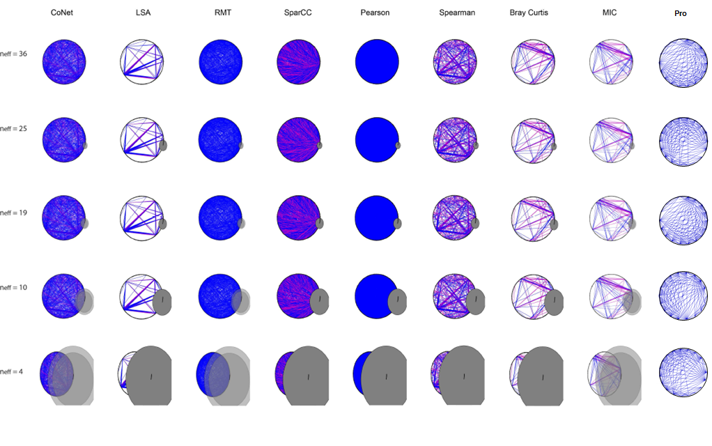
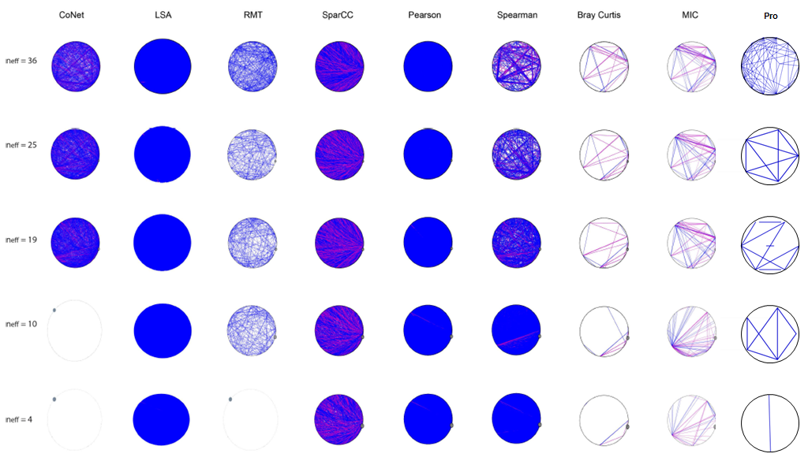

Weiss et al. compared several network inference methods for metagenomics abundance data sets: CoNet, RMT, MIC, LSA, SparCC, Pearson Correlation, Spearman Correlation, and Bray-Curtis (Faust et al.., 2012; Deng et al.., 2012; Ruan et al.., 2006; Xia et al.., 2013; Reshef et al.., 2011; Friedman and Alm, 2012; Pearson, 1909; Spearman, 1904; Bray and Curtis, 1957). They used simulated data sets as well as ecological data sets to compare these methods. Thus, our methodology was also applied to some of those data sets and the resulting networks were compared with the networks inferred by the other inference methods.
Raw Absolute Abundance Data

Figure 2. Coverage comparison of networks inferred by the methods on absolute abundance datasets from Weiss et al. with variations in neff. Neff values are diversity index calculated using inverse Simpson and represent the number of effective (i.e. overly abundant) OTUs in the dataset. This Figure is adapted from Weiss et al. (Supplementary Fig. 5). The final column has been added for comparison. Blue and pink lines represent significant edges with positive and negative associations, respectively. Grey circle represents mean abundance of the network, which the proportionality method did not calculate. For the last column, the networks are visualized using Cytoscape 3.11 in circular layout (Shannon et al., 2003). The circular layout from Cytoscape visualizes each network with its own orientation to form an ideal circle. P-value threshold was set to 0.001 for all the tools except for RMT and CoNet. Number of iterations for the proportionality method was 100 iterations.
Using the simulated datasets with variations in diversity index, the effect of normalization and densities of the inferred networks are analyzed. Fig. 2 shows networks inferred using the absolute abundance datasets from Weiss et al.. Just like all the other inference methods, the proportionality method inferred a similar number of edges regardless of the variations in diversity index (neff, which represents number of effective species in the dataset; low neff indicates compositionality is likely to be high) (Fig. 2). In fact, the network inferred using the proportionality method was less dense than the networks inferred by most techniques (Fig. 2). LSA, Bray Curtis, and MIC had less dense networks inferred than the proportionality method. This indicates that the proportionality method can perform adequately well for absolute data when compared to the preexisting network inference techniques. However, microbiome abundance data are never absolute data because the data are obtained from microbial sequences and the total abundance count is limited by the number of sequences. Thus, microbiome abundance values are relative and compositional data, for which the previous studies suggested correlation techniques, such as Pearson and Spearman correlation, do not perform well (Lovell et al., 2015).
Rarefied Data

Figure 3. Coverage comparison of networks inferred by each methods on rarefied abundance datasets from Weiss et al. with decreasing neff. neff is calculated using Inverse Simpson. The dataset is the subsample of the raw abundance dataset with a constraint in the total number of counts as 2000. This Figure is also adapted from Weiss et al. (Supplementary Fig. 6). The last column has been added for comparison. The same color assignments from Fig. 2 are used to represent significant edges and mean abundance of the network. For the last column, Cytoscape 3.11 is used for the visualization of the networks in circular layout. The circular layout generates a random (specific) orientation for each network. P-value threshold was set to 0.001 for all the tools except for RMT and CoNet. Number of iterations for the proportionality method was 50 iterations.
To test the performance of techniques with a compositional dataset, Weiss and colleague used rarefication to introduce compositional effects to the raw absolute abundance data set. Rarefication is a normalization technique that is used to introduce total sums per sample, making the data compositional, and to make the data more sparse by reducing number of OTUs from subsampling. For the rarefied datasets, the variations in diversity index significantly affected the number of edges for most of the techniques (Fig. 3). In general, datasets with lower diversity index had fewer interactions inferred. LSA, SparCC, Pearson, and Spearman were the exceptions as they did not have a decrease in the number of edges inferred. A possible explanation for the very low coverage of the proportionality method inferred networks is the sparsity of the datasets that was introduced by rarefication and a decrease in the number of effective OTUs. In fact, rarefied data tables with lower neff had more zeros when compared to those with higher neff. As the proportionality method discards zeros for the calculation, the proportionality method did not perform well with the zero-rich dataset. Also, although some techniques inferred more edges than the proportionality method did for the rarefied dataset, the edges inferred can include false positives.
Sensitivity, Specificity, and Precision
Thus, sensitivity, specificity, and precision, which are calculated using true positive, true negative, false positive, and false negative, were analyzed as a validation of the methodology (Table 2, 3, 4, 5, and 6). All of the datasets used for the analysis incorporate associations representing ecological interactions. The differences in the datasets used are as follows: various types of ecological relationships including three species interactions (Table 2 and 3), simpler one dimensional relationships (Table 4), sparse data (Table 5), and compositional and sparse data (Table 6). The datasets for Table 2, 3, and 4 have 40% of sparsity, while the datasets for Table 5 and 6 have 70% sparsity. Weiss et al. reported that all the inference methods performed reasonably well in specificity, but not so well in sensitivity. Also, sparsity was found to have a very significant effect on precision and sensitivity. On average without the results from the proportionality method, 40% sparsity datasets resulted in 0.25 precision and 0.22 sensitivity, but these average precision and sensitivity values decreased to 0.01 and 0.03 respectively for the 70% datasets. The proportionality method resulted in much higher precision values (0.907, 0.724, and 0.608) for the 40% sparse data tables than the average precision value. It also had relatively good sensitivity values (0.259, 0.181, 0.281) when compared with the mean sensitivity value. However, when sparsity was added to the data, proportionality method performed very poorly (0.000) for both precision and sensitivity. Still, it outperforms most of the inference techniques. As all the data tables have sample sizes of 50, 70% sparsity would mean that the proportionality method would discard at least 35 samples, 70% of the data. This loss of data due to zero-rich characteristic of the dataset limits the performance of the proportionality. Thus, the proportionality method performs well for a data set with low sparsity. It has high precision, so most of the significant edges that it successfully detects are truly significant. It has good specificity, so the insignificant interactions that it excludes for the network inference are correctly excluded. It has a modest performance for sensitivity, so it can fail to detect some significant edges for the network inference. In short, the proportionality method is somewhat sensitive, but very precise and very specific.
Table 2. Performance on first ecological dataset of complex and various ecological relationships. f1 score is harmonic mean of precision and sensitivity. The table is adapted from Weiss et al. Row for the proportionality method has been added in the order of f1 value. Sensitivity is calculated by TP/(TP+FN). Specificity is calculated using TN/(TN+FP). Precision is calculated by TP/(TP+FP).
Methods
Sensitivity
Specificity
Precision
TP
FP
TN
FN
f1
Proportionality
0.259
0.999
0.907
264
27
754059
756
0.403
LSA
0.280
1.000
0.586
286
202
754613
734
0.379
Spearman
0.299
0.999
0.246
305
936
753879
715
0.270
MIC
0.166
1.000
0.725
169
64
754751
851
0.270
SparCC
0.337
0.998
0.202
344
1359
753456
676
0.253
Bray-Curtis
0.106
0.999
0.177
108
502
754313
912
0.133
CoNET
0.086
0.998
0.050
88
1655
753160
932
0.064
RMT
0.039
1.000
0.129
40
270
754545
980
0.060
Pearson
0.246
0.973
0.012
251
20368
734447
769
0.023
Table 3. Performance on second ecological dataset of complex and various ecological relationships. The table is adapted from Weiss et al. Row for the proportionality method has been added in the order of f1 value.
Methods
Sensitivity
Specificity
Precision
TP
FP
TN
FN
f1
LSA
0.259
1.000
0.527
259
232
817328
741
0.347
proportionality
0.181
0.999
0.724
181
69
817491
819
0.290
MIC
0.168
1.000
0.764
168
52
817508
832
0.275
Spearman
0.251
0.999
0.186
251
1099
816461
749
0.214
Sparcc
0.258
0.998
0.150
258
1466
816094
742
0.189
Bray-Curis
0.053
0.999
0.086
53
560
817000
947
0.066
RMT
0.029
1.000
0.091
29
288
817272
971
0.044
CoNET
0.054
0.998
0.029
54
1789
815771
946
0.038
pz
0.210
0.973
0.009
210
22166
795394
790
0.018
Table 4. Performance on third ecological dataset of simple one dimensional ecological relationships. The table is adapted from Weiss et al. Row for the proportionality method has been added in the order of f1 value.
Methods
Sensitivity
Specificity
Precision
TP
FP
TN
FN
f1
lsa
0.344
1.000
0.879
124
17
258463
236
0.495
mic
0.297
1.000
0.892
107
13
258467
253
0.446
sz
0.578
0.999
0.354
208
379
258101
152
0.439
proportionality
0.281
0.999
0.608
101
65
258555
259
0.384
sparcc
0.469
0.998
0.241
169
531
257949
191
0.319
rmt
0.172
0.998
0.127
62
427
258053
298
0.146
bc
0.094
0.999
0.132
34
224
258256
326
0.110
conet
0.211
0.994
0.046
76
1562
256918
284
0.076
pz
0.353
0.971
0.017
127
7413
251067
233
0.032
Table 5. Performance on third ecological dataset of sparse ecological dataset. The table is adapted from Weiss et al. Row for the proportionality method has been added in the order of f1 value.
Methods
Sensitivity
Specificity
Precision
TP
FP
TN
FN
f1
sparcc
0.050
0.998
0.036
18
481
257999
342
0.042
rmt
0.025
0.998
0.020
9
452
258028
351
0.022
conet
0.039
0.996
0.012
14
1132
257348
346
0.019
pz
0.136
0.972
0.007
49
7286
251194
311
0.013
sz
0.011
0.999
0.011
4
367
258113
356
0.011
bc
0.000
0.999
0.000
0
136
258344
360
0.000
lsa
0.000
1.000
0.000
0
106
258374
360
0.000
mic
0.000
1.000
0.000
0
44
258436
360
0.000
proportionality
0.000
0.999
0.000
0.000
15.000
258465.000
360.000
0.000
Table 6. Performance on third ecological dataset of sparse and compositional ecological dataset. The table is adapted from Weiss et al. Row for the proportionality method has been added in the order of f1 value.